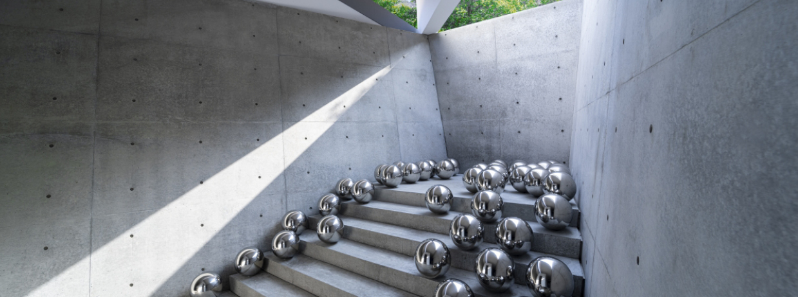
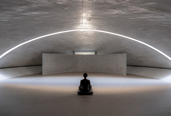
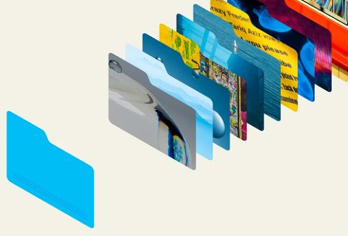
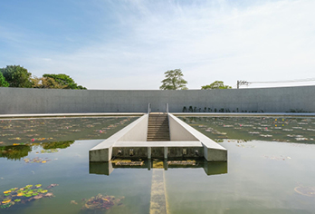
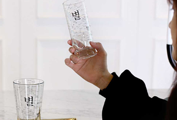
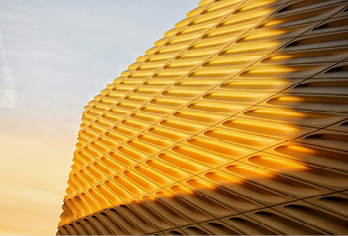

SPECIAL 콘텐츠 목차

추천 콘텐츠 1 / 2
SPECIAL
발행 연도
최신순

1%의 힘
비워낸 공간이
더 오래 기억되는 이유
KCC MASTER

AI X파일
일 잘하는 사람들의
AI 도구 활용법
시키는대로!

1%의 힘
물과 빛만으로 완성한
쉼의 공간
KCC MASTER

AI X파일
AI에게 물었다,
요즘 뜨는 음료는?

1%의 힘
건물의 인상을 바꾸는
1%의 디테일
1%의 힘